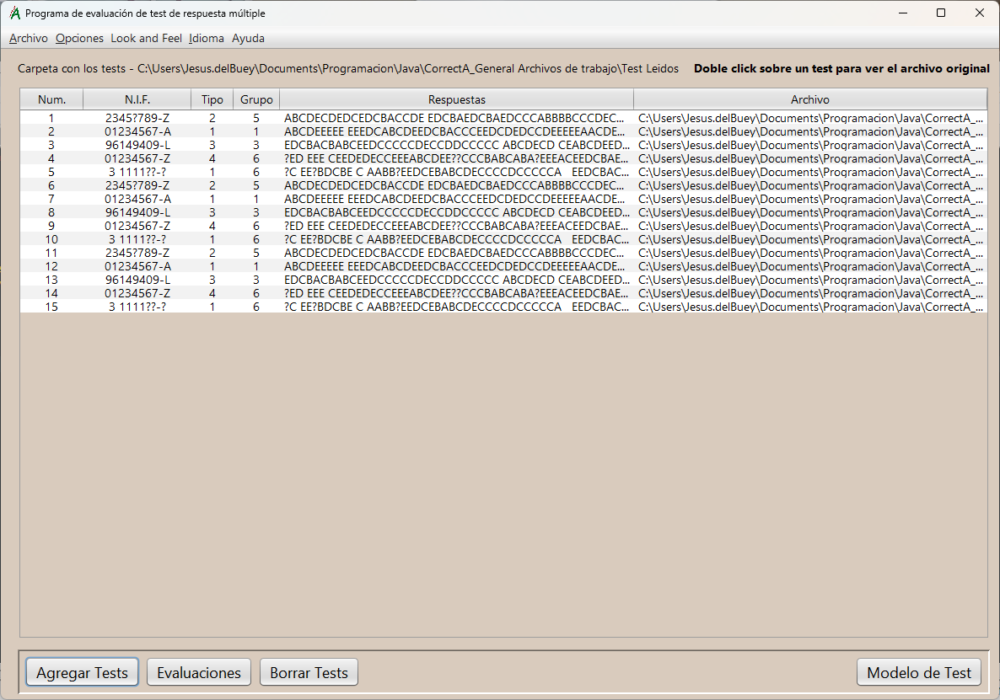
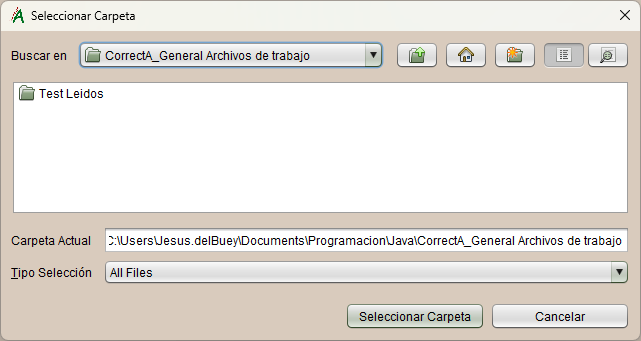

Ayuda de correctA
Aplicación para la evaluación de exámenes de tipo test, multiplantilla.
Esta es la pantalla principal de la aplicación. En ella podemos ver la tabla que contiene los test leídos. Aparecen los campos siguientes:
- Num.
- N.I.F.
- Tipo
- Grupo
- Respuestas
- Archivo
Número de orden de lectura.
Documento identificador del examinado.
El tipo de examen, que se corresponde con la plantilla de respuestas que se le aplicará. Puede haber hasta seis
de estos tipos. La tabla de equivalencias especifica su correspondencia con el tipo patrón.
Importante: Si no se lee correctamente el tipo, no se podrá corregir el test.
Grupo al que pertenece el alumno (opcional).
Cadena de respuestas del alumno a todas las preguntas. Será la letra de la opción de respuesta marcada. Si está en blanco es porque no la contestó y si tiene el símbolo "?" es porque hay más de una marca en esa respuesta.
Ruta del archivo gráfico contiene el test en cuestión.
Nota: Haciendo doble click sobre uno de los test podremos ver el archivo gráfico original y la interpretación de las marcas que ha hecho la aplicacíon. Se pueden abrir varios simultáneamente.
Opciones del menú:
ArchivoOpción Salir, de la aplicación.
Opciones- Probar test:
Pruebas y ajustes de la lectura del modelo de test. - Configuración:
Parámetros de captura de las imágenes de los test.
Selección de los diferentes estilos visuales disponibles para la aplicación.
IdiomaSelección del idioma.
AyudaAyuda de la aplicación y acceso a los detalles de la misma.
Botones de acción
- Agregar tests:
Inicio del proceso de captura de test, seleccionando la carpeta donde se hallan.

- Evaluaciones:
Inicio de la evaluación y calificación de los tests, una vez leidos.
- Borrar tests:
Eliminar los tests, que hay actualmente en la tabla.
- Modelo de Test:
Además de visualizar el modelo del test hay un botón para cambiar el logo del mismo y otro para imprimir las copias que necesitemos.